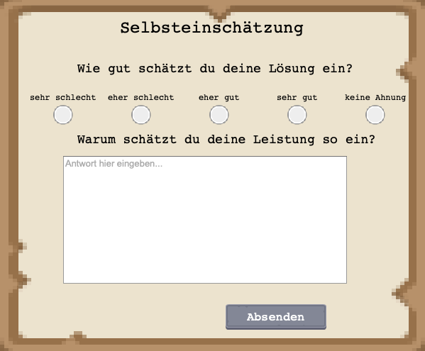
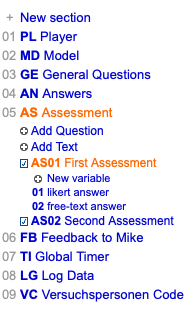
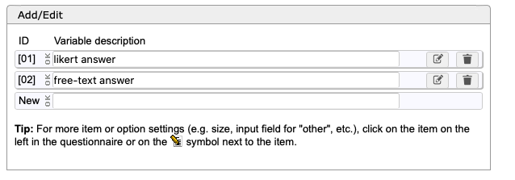
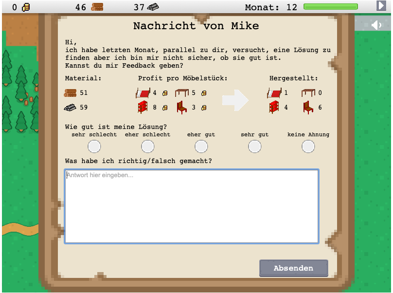
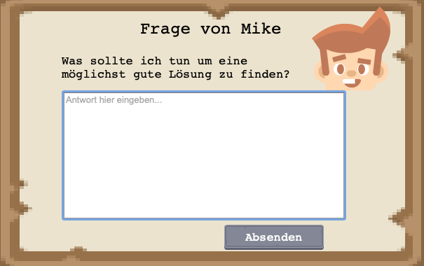
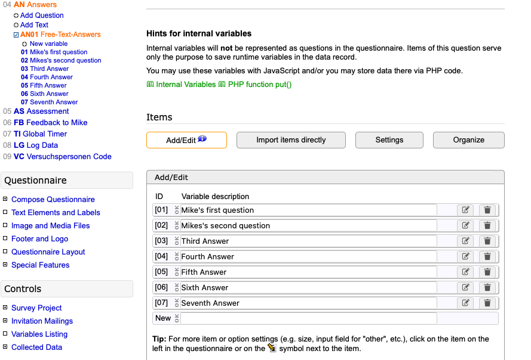

This tutorial shows how to use different dialogue classes to interact with the participants. Each class serves a different purpose as you will see in the following.
AssessmentDialogue - What Do You Feel About Your Answer?
Using the AssessmentDialogue we can obtain data on what the participant thinks on his or her performance. It consists of a likert-scale to evaluate the own performance as well as a text field to provide a reason.
Adding a question to SoSciSurvey
In order to store the answers of the participant, a placeholder needs to be created in the SoSciSurvey instance. If you uploaded the project like shown in [this tutorial](./tutorial-Uploading Project to SosciSurvey.html), you will already have a few Placeholders.

- The field we are looking for is
AS Assessment. - The Questions you add under the AS Assessment field will correspond to one AssessmentDialogue. Thus, in this example there are already 2 Assessments.
- To add another placeholder for a third assessment, click
Add Question, choose a name, set the type tointernal Variablesand save your changes:
- After that, the question you have created appears on the left bar.
- Click it and add two variables inside the question.
- the variable with id $01$ corresponds to the Likert-scaled answer and the variable with id $02$ is the free-text answer.
- Now your question can be linked to the game!
Create an AssessmentDialogue in the Game
To make the question appear in the game, it must be created. Therefore you can use two approaches
Using the ScenePlugin
A way to directly instantiate an AssessmentDialogue is using the ScenePlugin from Phaser. Basically you can start a dialogue from wherever you want. Suppose you are in the MainScene and you want to start a Dialogue, when the third month is reached. Inside the nextMonth function you can write something like:
if (this.month.value === 2) // months count from zero
{
this.scene.launch('assesmentDialogue',
{mainScene: this, title: "", question: "",
questionNumber: 3
});
}
This way, the AssessmentDialogue starts. Note That the Title and question are already filled in by default. The questionNumberis very important since it allows to fill the values to the corresponding variable in SoSciSurvey. An AssessmentDialogue with questionNumber: 3 will write its values inside the variable "AS03". Make sure you have created one as described above.
Things to note
- in this case
thiscorresponds to aMainSceneinstance. It is recommended to run dialogues off the MainScene, because it takes care of the camera position a placement of dialogues. If you want to run a dialogue from a different class, simply pass an instance of theMainScene.
Drawbacks using this approach
Using scene.launchhas the drawback to launch the scene immediately, so it can happen that multiple dialogues are launched at the same time, causing multiple windows at once. To overcome that, you can use the DialogueSchedule Class.
Using the DialogueScheduler
With this class you can add multiple dialogues and decide when to run them. By default, the first dialogue you add, is the first that will be launched. After it is closed, the second dialogue is launched until each dialogue has been launched and closed. For more information see DialogueSchedule.
Example Use
if (this.month.value === 2){
this.schedule.addDialogue('assesmentDialogue',
{mainScene: this, title: "", question: "",
questionNumber: 1});
}
Because this runs inside the nextMonthfunction, we do not need to do more because schedule.run()will already be called in this function. However for your individual schedules you will need to run the schedule to start them.
aiDialogue - How Well is Mike Doing?
An AiDialogue can be used to let the participant evaluate a specific solution. It is very similar to an AssessmentDialogue, because it has a Likert-scaled answer and a free-text answer. Additionally it proposes mikes solution to a certain problem.
Adding a question to SoSciSurvey
On SosciSurvey it is quite similar to the creation of a new AssessmentDialogue question. In this case, the question you are looking for is FB Feedback to Mike. Add a new question and add the a variable with Id $01$ for the Likert answer and $02$ for the free-text answer. Thats it!
Create an AiDialogue in the Game
The creation without the DialogueSheduleis analogous, only with a different keyword at the start. Thus it is left out. See the previous section on the AssessmentDialogue if you want to use that approach.
To create an AiDialogue we need to provide a bit more information:
if (this.month.value === 11)
{
this.schedule.addDialogue('aiDialogue',
{mainScene: this,
title: "",
question: "",
questionNumber: 1,
aiData: {
chair: {
profit: this.chair.profit[this.month.value-1],
solution: 6
},
bed: {
profit: this.bed.profit[this.month.value-1],
solution: 1
},
bookcase: {
profit: this.bookcase.profit[this.month.value-1],
solution: 4
},
table: {
profit: this.table.profit[this.month.value-1],
solution: 0
},
material: {
wood: this.player.initialWood[this.month.value-1],
metal: this.player.initialMetal[this.month.value-1]
}
}
The class will use this data in order to display custom settings for mike's solution.
Note that here you start again with questionNumber 1, if this is the first aiDialogue, regardless of already heaving dialogues of other classes. This is because the variables are different ones in SoSciSurvey. Make sure the number always corresponds to the question number in SoSciSurvey.
TextDialogue - Is there anything you want to say?

Use the TextDialogue to retrieve free-text answers from the participants.
Adding a question to SoSciSurvey
Like for every value from the participant we want to save, it is necessary, to create a corresponding variable that stores the answers.
For the TextDialogue, use the AN AnswersQuestion. Unlike the other versions, the placeholder for the answers are one level below, because we do not have Likert- and text answers:

In order to add placeholders for the answers, provide a description for each variable. The number in the ID column corresponds to the question number you want to use in the implementation.
Create a TextDialogue in the Game
Like for the other dialogues, you can feel free to launch the scene directly
this.scene.launch('textDialogue', {mainScene: this, avatar: 'mike', title: PROVIDE_A_TITLE, question: PROVIDE_A_QUESTION, questionNumber: NUMBER});
Or to use the dialogueSchedule
this.schedule.addDialogue('textDialogue', {mainScene: this, avatar: 'mike', title: PROVIDE_A_TITLE, question: PROVIDE_A_QUESTION, questionNumber: NUMBER});
- this - in this example the dialogue is launched from the MainScene but you can provide any active scene instance instead of this
- For example: ManagementDialogue, MarketDialogue etc.
- schedule - the DialogueSchedule instance that has already been created in this class.
- textDialogue - The key of the Textfield dialogue scene.
- mainScene - This is the instance of MainScene and is used for positioning. Every Scene that extends the DialogueScene needs to have a mainScene instance that can be accessed.
- title - Provide a text that should be displayed at the top of the dialogue like shown in the picture at the top.
- question - Here you can provide the text, that should be displayed below the title. Use \n for a line break.
- questionNumber - This is the variable ID discussed above. If I choose 1 as number, the value of this Answer will be written inside first question.
- avatar: Tells the scene that it should place the avatar from mike in the scene.
Note: The textfield is an HTML element. The positioning will be wrong if viewed on the local machine. On SosciSurvey the position should be correct.